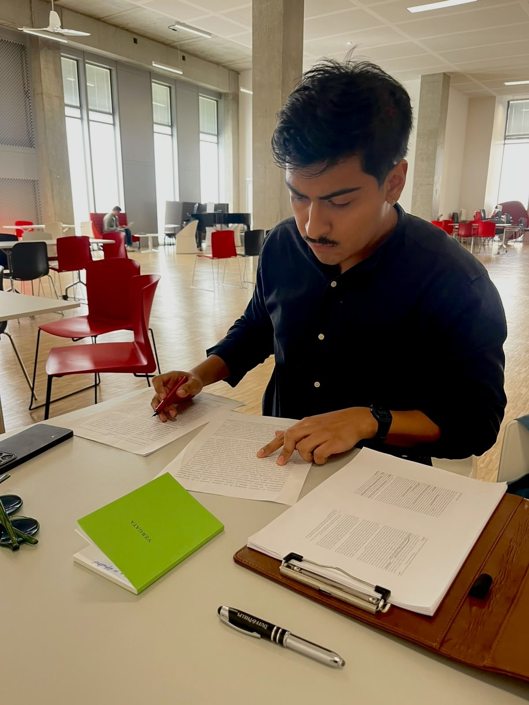

Curriculum

Je suis analyste politique.
Formation
2
- Master Études politiques (M2) EHESS, Paris
- Licence en politique et administration publique El Colegio de México
Parcours professionnel
2
- Analyste sécurité et risque politique Lantia Intelligence
- Analyste International SOS
Publications
7
- 2026 Los Ardillos en Guerrero: fragmentación criminal y violencia. Nexos.
- 2026 El piso de nuestras certezas. Entrevista con Jean-Pierre Dupuy. Conspiratio.
- 2026 O la necesidad de hacer del mundo un teatro. Cinematógrafo.
- 2025 La criminalisation comme politique : mexicanisation, violence et disparus. Carnets d’études politiques.
- 2025 Las masas ya no existen. Entrevista con Marcel Gauchet. Nexos.
- 2025 La violencia en el cambio de régimen. Nexos.
- 2024 A Dios lo que es de Dios, al Diablo lo que es del Diablo. Nexos.
Mémoires
2
- 2026 Le régime de transition vers la criminalité au Chiapas. Mémoire de master 2, EHESS.
- 2022 El estilo neuronal, el mito de la cerebralidad del espíritu. Mémoire de licence, El Colegio de México.
Communications et séminaires
5
- 2026 Crime in the Jungle: A Criminal Complex in an Environmental Protection Area in Chiapas. LASA Central America 2026, San José, Costa Rica.
- 2026 Las culturas políticas en México. Séminaire de doctorants de la Maison du Mexique, Paris.
- 2025 La violencia en el cambio de régimen. XIII Congreso Internacional de Ciencia Política, Mexico.
- 2025 La criminalisation comme politique. Mexicanisation, violence et disparus. 9e Journée d’étude de la mention Études politiques.
- 2024 La criminalización de la política. Seguridad, violencia política y desaparecidos. Séminaire de doctorants de la Maison du Mexique, Paris.
Académique
2
- 2026 Perspectives de l’Amérique Centrale. Séminaire des mexicanistes de la Maison du Mexique, Paris.
- 2015–2016 Seminario Permanente de Política y Administración Pública. Coordinateur général, Mexico.
Domaines
3
- Crime organisé et pouvoir territorial
- Risque géopolitique et politique
- Communication et stratégie politique